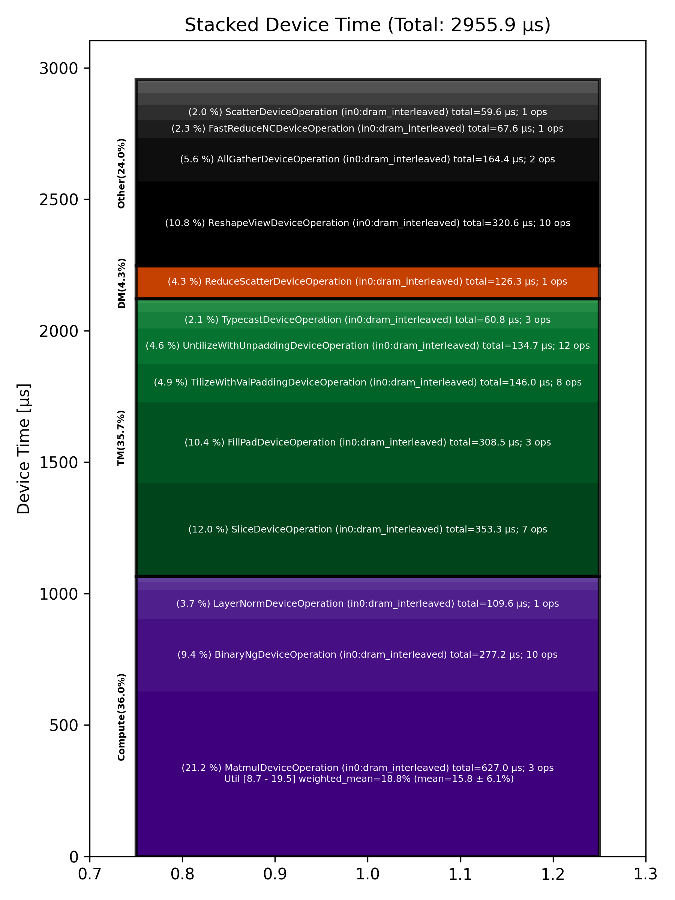

🚀 Performance Report 🚀 ======================== ID Total % Bound OP Code Device Device Time Op-to-Op Gap Cores DRAM DRAM % FLOPs FLOPs % Math Fidelity --------------------------------------------------------------------------------------------------------------------------------------------------------------------------- 27 0.7 % LayerNormDeviceOperation 17 110 μs 16 BF16, BF16 => BF16 39 1.2 % ReshapeViewDeviceOperation 2 29 μs 141 μs 72 BF16 => BF16 83 0.5 % UntilizeWithUnpaddingDeviceOperation 21 9 μs 62 μs 45 BF16 => BF16 123 1.3 % RepeatDeviceOperation 17 9 μs 177 μs 72 BF16 => BF16 142 0.8 % TilizeWithValPaddingDeviceOperation 7 39 μs 85 μs 45 BF16 => BF16 189 5.2 % DRAM MatmulDeviceOperation 32 x 2880 x 5760 20 359 μs 416 μs 60 191 GB/s 66.4 % 11.8 TFLOPs 19.2 % HiFi4 BF16 x BFP8 => BF16 216 0.1 % BinaryNgDeviceOperation 13 21 μs 1 μs 72 BF16, BF16 => BF16 242 0.2 % UntilizeWithUnpaddingDeviceOperation 20 32 μs 1 μs 60 BF16 => BF16 269 2.0 % SliceDeviceOperation 31 155 μs 145 μs 64 BF16 => BF16 293 0.3 % TilizeWithValPaddingDeviceOperation 27 39 μs 1 μs 45 BF16 => BF16 327 0.5 % UnaryDeviceOperation 2 9 μs 67 μs 72 BF16 => BF16 375 0.8 % BinaryNgDeviceOperation 14 15 μs 98 μs 72 BF16, BF16 => BF16 405 1.2 % UntilizeWithUnpaddingDeviceOperation 23 32 μs 149 μs 60 BF16 => BF16 421 1.4 % SliceDeviceOperation 27 155 μs 54 μs 64 BF16 => BF16 450 0.3 % TilizeWithValPaddingDeviceOperation 24 39 μs 9 μs 45 BF16 => BF16 503 0.4 % UnaryDeviceOperation 14 9 μs 53 μs 72 BF16 => BF16 534 1.4 % BinaryNgDeviceOperation 15 17 μs 187 μs 72 BF16, BF16 => BF16 562 1.6 % UnaryDeviceOperation 20 11 μs 232 μs 72 BF16 => BF16 586 0.7 % BinaryNgDeviceOperation 28 12 μs 93 μs 72 BF16, BF16 => BF16 637 2.0 % BinaryNgDeviceOperation 19 12 μs 279 μs 72 BF16, BF16 => BF16 659 4.9 % SLOW MatmulDeviceOperation 32 x 2880 x 2880 7 235 μs 489 μs 45 147 GB/s 51.1 % 9.0 TFLOPs 19.5 % HiFi4 BF16 x BFP8 => BF16 682 0.1 % BinaryNgDeviceOperation 28 11 μs 1 μs 72 BF16, BF16 => BF16 709 1.3 % ReshapeViewDeviceOperation 27 159 μs 31 μs 72 BF16 => BF16 752 0.4 % TypecastDeviceOperation 5 57 μs 1 μs 72 BF16 => FP32 788 0.6 % ReshapeViewDeviceOperation 22 47 μs 42 μs 72 FP32 => FP32 833 1.9 % SLOW MatmulDeviceOperation 32 x 2880 x 32 11 33 μs 241 μs 1 14 GB/s 4.9 % 0.2 TFLOPs 8.7 % HiFi2 FP32 x BFP8 => FP32 834 0.8 % TypecastDeviceOperation 24 2 μs 110 μs 1 FP32 => BF16 883 1.5 % FillPadDeviceOperation 21 3 μs 221 μs 1 BF16 => BF16 907 1.9 % PadDeviceOperation 29 35 μs 251 μs 2 BF16 => BF16 956 0.3 % FillPadDeviceOperation 18 5 μs 39 μs 1 BF16 => BF16 977 1.5 % TopKDeviceOperation 4 44 μs 179 μs 1 BF16 => BF16 1016 0.3 % SliceDeviceOperation 13 1 μs 38 μs 1 BF16 => BF16 1034 1.5 % SliceDeviceOperation 28 1 μs 217 μs 1 UINT16 => UINT16 1083 0.6 % TypecastDeviceOperation 17 2 μs 91 μs 1 UINT16 => INT32 1121 1.1 % ReshapeViewDeviceOperation 8 5 μs 163 μs 16 INT32 => INT32 1136 0.7 % UntilizeWithUnpaddingDeviceOperation 5 3 μs 96 μs 16 INT32 => INT32 1169 1.0 % UntilizeWithUnpaddingDeviceOperation 4 3 μs 152 μs 16 INT32 => INT32 1206 0.6 % PermuteDeviceOperation 15 3 μs 81 μs 16 INT32 => INT32 1219 1.2 % PermuteDeviceOperation 25 3 μs 176 μs 16 INT32 => INT32 1265 0.6 % ConcatDeviceOperation 4 2 μs 81 μs 32 INT32, INT32 => INT32 1305 1.2 % PermuteDeviceOperation 12 3 μs 178 μs 16 INT32 => INT32 1314 0.6 % TilizeWithValPaddingDeviceOperation 24 7 μs 87 μs 16 INT32 => INT32 1355 1.4 % SoftmaxDeviceOperation 29 24 μs 190 μs 72 BF16 => BF16 1393 4.2 % AllGatherDeviceOperation 0 54 μs 560 μs 24 INT32 => INT32 1410 1.6 % AllBroadcastDeviceOperation 8 40 μs 200 μs 4 BF16 => BF16 1458 0.8 % UntilizeWithUnpaddingDeviceOperation 20 7 μs 104 μs 1 BF16 => BF16 1503 1.2 % UntilizeWithUnpaddingDeviceOperation 10 7 μs 167 μs 1 BF16 => BF16 1507 0.5 % UntilizeWithUnpaddingDeviceOperation 25 7 μs 72 μs 1 BF16 => BF16 1549 1.8 % UntilizeWithUnpaddingDeviceOperation 31 7 μs 263 μs 1 BF16 => BF16 1584 0.5 % ConcatDeviceOperation 5 2 μs 76 μs 64 BF16, BF16 => BF16 1604 1.3 % TilizeWithValPaddingDeviceOperation 26 5 μs 180 μs 2 BF16 => BF16 1662 0.9 % ReshapeViewDeviceOperation 11 11 μs 117 μs 8 INT32 => INT32 1673 1.1 % SliceDeviceOperation 0 2 μs 154 μs 8 INT32 => INT32 1716 0.7 % UntilizeWithUnpaddingDeviceOperation 22 14 μs 96 μs 8 INT32 => INT32 1748 1.2 % SliceDeviceOperation 22 4 μs 167 μs 72 INT32 => INT32 1788 1.5 % TilizeWithValPaddingDeviceOperation 18 8 μs 216 μs 8 INT32 => INT32 1800 0.8 % BinaryNgDeviceOperation 1 11 μs 106 μs 72 INT32, INT32 => INT32 1853 1.1 % BinaryNgDeviceOperation 19 3 μs 163 μs 72 INT32, INT32 => INT32 1882 1.7 % ReshapeViewDeviceOperation 16 7 μs 240 μs 8 INT32 => INT32 1920 1.6 % ReshapeViewDeviceOperation 9 3 μs 239 μs 8 BF16 => BF16 1934 0.6 % UntilizeWithUnpaddingDeviceOperation 7 7 μs 89 μs 1 INT32 => INT32 1980 1.1 % UntilizeWithUnpaddingDeviceOperation 18 6 μs 157 μs 1 BF16 => BF16 2010 1.0 % ScatterDeviceOperation 16 60 μs 84 μs 1 BF16, INT32 => BF16 2018 0.9 % TilizeWithValPaddingDeviceOperation 24 5 μs 124 μs 64 BF16 => BF16 2065 1.7 % ReshapeViewDeviceOperation 4 23 μs 222 μs 2 BF16 => BF16 2100 0.5 % UntilizeDeviceOperation 22 4 μs 74 μs 2 BF16 => BF16 2133 3.6 % MeshPartitionDeviceOperation 29 2 μs 525 μs 16 BF16 => BF16 2176 2.9 % MeshPartitionDeviceOperation 19 2 μs 430 μs 16 BF16 => BF16 2204 0.9 % TilizeWithValPaddingDeviceOperation 18 4 μs 136 μs 1 BF16 => BF16 2221 1.3 % TransposeDeviceOperation 31 2 μs 183 μs 72 BF16 => BF16 2253 0.7 % ReshapeViewDeviceOperation 31 8 μs 95 μs 64 BF16 => BF16 2280 2.0 % BinaryNgDeviceOperation 1 127 μs 168 μs 72 BF16, BF16 => BF16 2321 3.1 % FillPadDeviceOperation 4 301 μs 156 μs 64 BF16 => BF16 2342 0.5 % FastReduceNCDeviceOperation 3 68 μs 1 μs 72 BF16 => BF16 2370 0.2 % SliceDeviceOperation 24 35 μs 1 μs 72 BF16 => BF16 2417 4.0 % ReduceScatterDeviceOperation 0 126 μs 472 μs 24 BF16 => BF16 2449 2.6 % AllGatherDeviceOperation 0 110 μs 270 μs 40 BF16 => BF16 2489 0.4 % BinaryNgDeviceOperation 12 49 μs 10 μs 72 BF16, BF16 => BF16 2501 1.0 % ReshapeViewDeviceOperation 27 29 μs 121 μs 72 BF16 => BF16 --------------------------------------------------------------------------------------------------------------------------------------------------------------------------- 100.0 % 79 device ops, 0 host ops, 0 signposts 2,956 μs 11,842 μs 📊 Stacked report 📊 ==================== Total % Op Code Device Time Sum Op Count Op Category Min FLOPs Max FLOPs Mean FLOPs Std FLOPs Weighted Mean FLOPs ------------------------------------------------------------------------------------------------------------------------------------------------------------------------------ 21.21 % MatmulDeviceOperation (in0:dram_interleaved) 627.00 μs 3 Compute 8.71 % 19.50 % 15.81 % 6.15 % 18.76 % 11.95 % SliceDeviceOperation (in0:dram_interleaved) 353.34 μs 7 TM 10.85 % ReshapeViewDeviceOperation (in0:dram_interleaved) 320.61 μs 10 Other 10.44 % FillPadDeviceOperation (in0:dram_interleaved) 308.49 μs 3 TM 9.38 % BinaryNgDeviceOperation (in0:dram_interleaved) 277.23 μs 10 Compute 5.56 % AllGatherDeviceOperation (in0:dram_interleaved) 164.42 μs 2 Other 4.94 % TilizeWithValPaddingDeviceOperation (in0:dram_interleaved) 146.01 μs 8 TM 4.56 % UntilizeWithUnpaddingDeviceOperation (in0:dram_interleaved) 134.73 μs 12 TM 4.27 % ReduceScatterDeviceOperation (in0:dram_interleaved) 126.28 μs 1 DM 3.71 % LayerNormDeviceOperation (in0:dram_interleaved) 109.57 μs 1 Compute 2.29 % FastReduceNCDeviceOperation (in0:dram_interleaved) 67.62 μs 1 Other 2.06 % TypecastDeviceOperation (in0:dram_interleaved) 60.83 μs 3 TM 2.02 % ScatterDeviceOperation (in0:dram_interleaved) 59.60 μs 1 Other 1.49 % TopKDeviceOperation (in0:dram_interleaved) 44.08 μs 1 Other 1.36 % AllBroadcastDeviceOperation (in0:dram_interleaved) 40.08 μs 1 Other 1.18 % PadDeviceOperation (in0:dram_interleaved) 35.01 μs 1 TM 0.95 % UnaryDeviceOperation (in0:dram_interleaved) 28.09 μs 3 Compute 0.80 % SoftmaxDeviceOperation (in0:dram_interleaved) 23.55 μs 1 Compute 0.30 % RepeatDeviceOperation (in0:dram_interleaved) 8.91 μs 1 Other 0.27 % PermuteDeviceOperation (in0:dram_interleaved) 7.96 μs 3 TM 0.13 % UntilizeDeviceOperation (in0:dram_interleaved) 3.82 μs 1 TM 0.12 % MeshPartitionDeviceOperation (in0:dram_interleaved) 3.50 μs 2 Other 0.11 % ConcatDeviceOperation (in0:dram_interleaved) 3.31 μs 2 TM 0.06 % TransposeDeviceOperation (in0:dram_interleaved) 1.83 μs 1 TM ------------------------------------------------------------------------------------------------------------------------------------------------------------------------------
